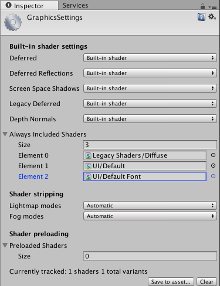

Graphics
Use the Graphics settings (main menu: Edit > Project Settings, then select the Graphics category) to apply global settings for Graphics.

This section provides documentation on the following groups of properties:
- Scriptable Render Pipeline Settings
- Camera Settings
- Tier Settings
- Built-in shader settings
- Always-included Shaders
- Shader stripping
- Shader preloading
Scriptable Render Pipeline Settings
This allows you to define a series of commands to control exactly how the Scene should be rendered (instead of using the default rendering pipeline used by Unity). For more information on this feature, see the Scriptable Render Pipeline package documentation.
Camera Settings
These properties control various rendering settings.
| Property | Function | |
|---|---|---|
| Transparency Sort Mode | Define the order for rendering objects by their distance along a specific axis. Renderers in Unity are sorted by several criteria, such as their layer number or their distance from the camera. This is generally only useful in 2D development: for example, sorting Sprites by height or along the Y-axis. | |
| Default | Sort objects based on the Camera mode. | |
| Perspective | Sort objects based on perspective view. | |
| Orthographic | Sort objects based on orthographic view. | |
| Custom Axis | Sort objects based on the sort mode defined with the Transparency Sort Axis. | |
| Transparency Sort Axis | Define a custom Transparency Sort Mode. |
Tier Settings

These settings allow you to make platform-specific adjustments to rendering and shader compilation, by tweaking built-in defines. For example, you can use this to enable Cascaded Shadows on high-tier iOS devices, but to disable them on low-tier devices to improve performance. Tiers are defined by Rendering.GraphicsTier.
| Property | Function | |
|---|---|---|
| Standard Shader Quality | Set the quality of the Standard Shader to High, Medium, or Low. | |
| Reflection Probes Box Projection | Enable projection for reflection UV mappings on Reflection Probes. | |
| Reflection Probes Blending | Enable blending on Reflection Probes. | |
| Detail Normal Map | Enable Detail Normal Map sampling, if assigned. | |
| Enable Semitransparent Shadows | Enable Semitransparent Shadows. This adds or removes the UNITY_USE_DITHER_MASK_FOR_ALPHABLENDED_SHADOWS shader compiler define. |
|
| Enable Light Probe Proxy Volume | Enable rendering a 3D grid of interpolated Light Probes. | |
| Cascaded Shadows | Enable using cascaded shadow maps. This adds or removes the UNITY_NO_SCREENSPACE_SHADOWS shader compiler define. |
|
| Prefer 32 bit shadow maps | Enable 32-bit float shadow map when you are targeting PS4 or platforms using DX11 or DX12. Most platforms have a fixed shadow map format that you can't adjust. These vary in format, and can be 16-bit, 24-bit, or 32-bit, and can also be either float- or integer-based. 32-bit shadow maps give higher quality shadows than 16-bit, but use increased memory and bandwidth on the GPU. Note: To use 32-bit shadow maps, make sure the depth buffer is also set to 32-bit. |
|
| Use HDR | Enable High Dynamic Range rendering for this tier. | |
| HDR Mode | Select the format to use for the HDR buffer when HDR is enabled for the current Graphics Tier. By default, this is set to FP16. | |
| FP16 | Color render texture format, 16-bit floating point per channel. | |
| R11G11B10 | Color render texture format. R and G channels are 11-bit floating point, B channel is 10-bit floating point. | |
| Rendering Path | Choose how Unity should render graphics. Different rendering paths affect the performance of your game, and how lighting and shading are calculated. Some paths are more suited to different platforms and hardware than others. Deferred rendering is not supported when using Orthographic projection. If the camera’s projection mode is set to Orthographic, these values are overridden, and the camera always uses Forward rendering. For more information, see Rendering Paths. |
|
| Forward | The traditional rendering path. This supports all the typical Unity graphics features (normal maps, per-pixel lights, shadows etc.). However under default settings, only a small number of the brightest lights are rendered in per-pixel lighting mode. The rest of the lights are calculated at object vertices or per-object. | |
| Deferred | Deferred shading has the most lighting and shadow fidelity, and is best suited if you have many realtime lights. It requires a certain level of hardware support. | |
| Legacy Vertex Lit | Legacy Vertex Lit is the rendering path with the lowest lighting fidelity and no support for realtime shadows. It is a subset of Forward rendering path. | |
| Legacy Deferred (light prepass) | Legacy Deferred is similar to Deferred Shading, just using a different technique with different trade-offs. It does not support the Unity 5 physically-based standard shader. | |
| Realtime Global Illumination CPU Usage | Choose how much CPU usage to assign to the final lighting calculations at runtime. Increasing this makes the system react faster to changes in lighting at a cost of using more CPU time. Note: Some platforms allow all CPUs to be occupied by worker threads whereas some enforce maximums. For example, Xbox One and PS4 allow a maximum of 4 CPU cores. For Android devices, if it is a bigLittle architecture, only the little CPUs are used; otherwise the maximum is one less than the total number of CPUs. |
|
| Low | 25% of the allowed CPU threads are used as worker threads. | |
| Medium | 50% of the allowed CPU threads are used as worker threads. | |
| High | 75% of the allowed CPU threads are used as worker threads. | |
| Unlimited | 100% of the allowed CPU threads are used as worker threads. |
Built-in shader settings
Use these settings to specify which shader is used to do lighting pass calculations in each rendering path listed.
| Rendering path | Shader to use |
|---|---|
| Deferred | Use with Deferred shading. |
| Deferred Reflection | Use with Reflection Probes along deferred lighting. |
| Screen Space shadows | Use with cascaded shadow maps for directional lights on PC/console platforms. |
| Legacy deferred | Use with Legacy Deferred lighting. |
| Motion vectors | Set MeshRenderer::Motion Vectors when using Legacy Deferred lighting. |
| Lens Flare | Use with Lens Flares. |
| Light Halo | Use with Light Halos. |
For each of these rendering paths, you can choose the shader you want to use:
- No Support to disable this calculation. Use this setting if you are not using deferred shading or lighting. This will save some space in the built game data files.
- Built-in shader to use Unity's built-in shaders to do the calculation. This is the default.
- Custom shader to use your own compatible shader to do the calculation. This enables you to do deep customization of deferred rendering.
When you choose Custom shader, a Shader reference property appears below the rendering path property where you can set a reference to the Shader you want to use.
Always-included Shaders
Specify a list of Shaders that are always stored along with the Project, even if nothing in your Scene actually uses them. It is important to add Shaders used by streamed AssetBundles to this list to ensure they can be accessed.
To add a shader to the list, increase the value in the Size property.
To remove the last Shader in the list, decrease the Size property.
To remove a Shader which is not the last one in the list, you can set the value to None.
Shader stripping
Lower your build data size and improve loading times by stripping out certain shaders.
By default, Unity looks at your Scenes and lightmapping settings to figure out which fog and lightmapping modes are not in use, and skips corresponding Shader variants.
However, you can choose specific modes if you are building asset bundles to ensure that the modes you want to use are included.
Lightmapping
By default, the Lightmap modes property defaults to Automatic, meaning that Unity decides which shader variants to skip.
To specify which modes to use yourself, change this to Custom and enable or disable the following lightmapping modes:
- Baked Non-Directional
- Baked Directional
- Realtime Non-Directional
- Realtime Directional
- Baked Shadowmask
- Baked Subtractive
Fog
By default, the Fog Modes property defaults to Automatic, meaning that Unity decides which shader variants to skip.
To specify which modes to use yourself, change this to Custom and enable or disable the following fog modes:
- Linear
- Exponential
- Exponential Squared
Instancing Shader variants
Unity strips instancing variants if GPU instancing is not enabled on any GameObject in the Scene. You can use the Instancing Variants property to override the default stripping behavior.
| Value | Description |
|---|---|
| Strip Unused (Default value) | When Unity builds a Project, it only includes instancing Shader variants if at least one Material referencing the Shader has Enable instancing enabled. Unity strips any Shaders that are not referenced by Materials with Enable instancing disabled. |
| Strip All | Strip all instancing Shader variants, even if they are being used. |
| Keep All | Keep all instancing Shader variants, even if they are not being used. |
Shader preloading
Specify a list of shader variant collection assets to preload while loading the game. Shader variants specified in this list are loaded during entire lifetime of the application. Use it for preloading very frequently used shaders. See Optimizing Shader Load Time page for details.
To add a shader variant collection to the list, increase the value in the Size property.